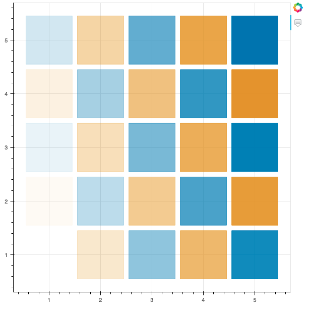
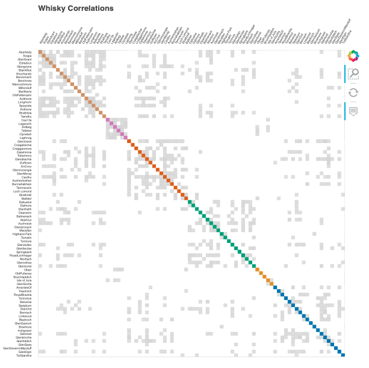
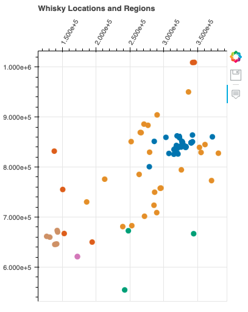
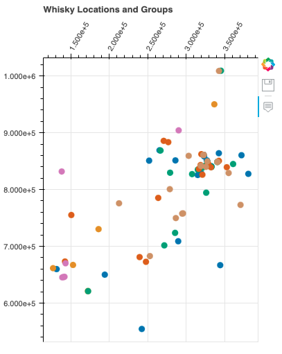

Analysis of Scotch Whisky Production and Flavor Profiles
Contents
Analysis of Scotch Whisky Production and Flavor Profiles#
Scotch Whisky is renowned for its intricate flavors and diverse sensory experiences. This uniqueness is further emphasized by the various regions of Scotland in which these spirits are crafted, each region contributing its distinct flavor profiles.
The aim of this case study is to classify Scotch whiskies based on their intricate flavor characterisitcs. The central focus lies in the meticulous categorization of these iconic beverages to gain insights into their distinctive taste attributes.
The dataset consists of taste ratings of a single malt Scotch whisky derived from nearly every active whisky distillery in Scotland. It is a repository of evaluations for 86 malt whiskies, each being appraised on a scale from 0 to 4 across 12 different taste categories. These taste categories provide comprehensive insights into the character of the whiskies, encompassing aspects such as sweetness, smokiness, medicinal attributes, spiciness and more.
Task Description#
Task 1 - Finding Correlations
Description:
Finding correlations among 86 Scotch Whiskies, aiming to determine patterns and connections between different flavor characteristics
Task 2 - Clustering
Description:
Finding correlation matrix using
Pearson Correlationamong different flavor attributesEmploying
Spectral Coclusteringto find approximate solution to clusteringIdentifying six distinct cluster blocks
Task 3 - Bokeh Plot
Description:
Using Bokeh to create an interactive plot of geographical map of distilleries
import pandas as pd
import numpy as np
import matplotlib.pyplot as plt
import os
Loading Whisky Data#
The first task involves loading and examining the data. This requires the utilization of two data files: whiskies.txt and regions.txt.
The regions.txt file contains the regions from which each whisky originates. The whiskies.txt file contains all details about the whiskies.
Extracting whisky-related information from
whiskies.txtand storing it in a dataframeReading in the
regions.txtfile and adding it as a column to the whisky dataframe
relative_path = "./"
whisky_file = os.path.join(relative_path,'whiskies.txt')
region_file = os.path.join(relative_path, 'regions.txt')
whisky_df = pd.read_csv(whisky_file)
whisky_df["Region"] = pd.read_csv(region_file)
whisky_df.head()
| RowID | Distillery | Body | Sweetness | Smoky | Medicinal | Tobacco | Honey | Spicy | Winey | Nutty | Malty | Fruity | Floral | Postcode | Latitude | Longitude | Region | |
|---|---|---|---|---|---|---|---|---|---|---|---|---|---|---|---|---|---|---|
| 0 | 1 | Aberfeldy | 2 | 2 | 2 | 0 | 0 | 2 | 1 | 2 | 2 | 2 | 2 | 2 | \tPH15 2EB | 286580 | 749680 | Highlands |
| 1 | 2 | Aberlour | 3 | 3 | 1 | 0 | 0 | 4 | 3 | 2 | 2 | 3 | 3 | 2 | \tAB38 9PJ | 326340 | 842570 | Speyside |
| 2 | 3 | AnCnoc | 1 | 3 | 2 | 0 | 0 | 2 | 0 | 0 | 2 | 2 | 3 | 2 | \tAB5 5LI | 352960 | 839320 | Highlands |
| 3 | 4 | Ardbeg | 4 | 1 | 4 | 4 | 0 | 0 | 2 | 0 | 1 | 2 | 1 | 0 | \tPA42 7EB | 141560 | 646220 | Islay |
| 4 | 5 | Ardmore | 2 | 2 | 2 | 0 | 0 | 1 | 1 | 1 | 2 | 3 | 1 | 1 | \tAB54 4NH | 355350 | 829140 | Highlands |
The iloc method can be used to index a dataframe based on integer positions. The method provides a means to access specific rows and columns within the dataset, utilizing integer-based referencing.
Indexing is defined by two parameters: the start_index and the end_index.
The start_index denotes the initial position from which the indexing operation commences, inclusively, and the end index signifies the position where the operation concludes, exclusively.
Taking a look at the first 10 rows of the whisky dataframe.
whisky_df.iloc[0:10]
| RowID | Distillery | Body | Sweetness | Smoky | Medicinal | Tobacco | Honey | Spicy | Winey | Nutty | Malty | Fruity | Floral | Postcode | Latitude | Longitude | Region | |
|---|---|---|---|---|---|---|---|---|---|---|---|---|---|---|---|---|---|---|
| 0 | 1 | Aberfeldy | 2 | 2 | 2 | 0 | 0 | 2 | 1 | 2 | 2 | 2 | 2 | 2 | \tPH15 2EB | 286580 | 749680 | Highlands |
| 1 | 2 | Aberlour | 3 | 3 | 1 | 0 | 0 | 4 | 3 | 2 | 2 | 3 | 3 | 2 | \tAB38 9PJ | 326340 | 842570 | Speyside |
| 2 | 3 | AnCnoc | 1 | 3 | 2 | 0 | 0 | 2 | 0 | 0 | 2 | 2 | 3 | 2 | \tAB5 5LI | 352960 | 839320 | Highlands |
| 3 | 4 | Ardbeg | 4 | 1 | 4 | 4 | 0 | 0 | 2 | 0 | 1 | 2 | 1 | 0 | \tPA42 7EB | 141560 | 646220 | Islay |
| 4 | 5 | Ardmore | 2 | 2 | 2 | 0 | 0 | 1 | 1 | 1 | 2 | 3 | 1 | 1 | \tAB54 4NH | 355350 | 829140 | Highlands |
| 5 | 6 | ArranIsleOf | 2 | 3 | 1 | 1 | 0 | 1 | 1 | 1 | 0 | 1 | 1 | 2 | KA27 8HJ | 194050 | 649950 | Islands |
| 6 | 7 | Auchentoshan | 0 | 2 | 0 | 0 | 0 | 1 | 1 | 0 | 2 | 2 | 3 | 3 | G81 4SJ | 247670 | 672610 | Lowlands |
| 7 | 8 | Auchroisk | 2 | 3 | 1 | 0 | 0 | 2 | 1 | 2 | 2 | 2 | 2 | 1 | \tAB55 3XS | 340754 | 848623 | Speyside |
| 8 | 9 | Aultmore | 2 | 2 | 1 | 0 | 0 | 1 | 0 | 0 | 2 | 2 | 2 | 2 | \tAB55 3QY | 340754 | 848623 | Speyside |
| 9 | 10 | Balblair | 2 | 3 | 2 | 1 | 0 | 0 | 2 | 0 | 2 | 1 | 2 | 1 | \tIV19 1LB | 270820 | 885770 | Highlands |
The iloc method can also be applied in examining the columns within a dataframe.
In the dataset, a subset of the columns contain the data for flavor attributes of whisky. Utilizing the .columns attribute on a dataframe object yields the column names associated with that particular dataframe.
whisky_df.columns
Index(['RowID', 'Distillery', 'Body', 'Sweetness', 'Smoky', 'Medicinal',
'Tobacco', 'Honey', 'Spicy', 'Winey', 'Nutty', 'Malty', 'Fruity',
'Floral', 'Postcode', ' Latitude', ' Longitude', 'Region'],
dtype='object')
Starting from index 2 for the first flavor attribute Body and including index 14 for Floral gives the column index locations for the flavors.
Next, the flavor attributes for the first ten whiskies in the dataframe are examined.
whisky_df.iloc[0:11,2:14]
| Body | Sweetness | Smoky | Medicinal | Tobacco | Honey | Spicy | Winey | Nutty | Malty | Fruity | Floral | |
|---|---|---|---|---|---|---|---|---|---|---|---|---|
| 0 | 2 | 2 | 2 | 0 | 0 | 2 | 1 | 2 | 2 | 2 | 2 | 2 |
| 1 | 3 | 3 | 1 | 0 | 0 | 4 | 3 | 2 | 2 | 3 | 3 | 2 |
| 2 | 1 | 3 | 2 | 0 | 0 | 2 | 0 | 0 | 2 | 2 | 3 | 2 |
| 3 | 4 | 1 | 4 | 4 | 0 | 0 | 2 | 0 | 1 | 2 | 1 | 0 |
| 4 | 2 | 2 | 2 | 0 | 0 | 1 | 1 | 1 | 2 | 3 | 1 | 1 |
| 5 | 2 | 3 | 1 | 1 | 0 | 1 | 1 | 1 | 0 | 1 | 1 | 2 |
| 6 | 0 | 2 | 0 | 0 | 0 | 1 | 1 | 0 | 2 | 2 | 3 | 3 |
| 7 | 2 | 3 | 1 | 0 | 0 | 2 | 1 | 2 | 2 | 2 | 2 | 1 |
| 8 | 2 | 2 | 1 | 0 | 0 | 1 | 0 | 0 | 2 | 2 | 2 | 2 |
| 9 | 2 | 3 | 2 | 1 | 0 | 0 | 2 | 0 | 2 | 1 | 2 | 1 |
| 10 | 4 | 3 | 2 | 0 | 0 | 2 | 1 | 3 | 3 | 0 | 1 | 2 |
Exploring Correlations#
The next step is to examine the correlation among various flavor attributes.
To accomplish this, the corr method is used to calculate correlations across the columns of our whisky dataframe. The method, by default, employs the Pearson Correlation technique, which looks for linear correlations within the data.
In the scenario where attributes have been measured for two variables, the Pearson Correlation coefficient tends to approach 1 as the data points in the scatterplot converge towards a straight upward line.
flavors = whisky_df.iloc[:,2:14]
The flavor attributes for the whiskies are stored within the dataframe named flavors.
To compute the pairwise correlation of columns, the corr method is employed and the resulting output is stored in the dataframe named corr_flavors.
corr_flavors = pd.DataFrame.corr(flavors)
print(corr_flavors)
Body Sweetness Smoky Medicinal Tobacco Honey \
Body 1.000000 -0.136518 0.524032 0.354050 0.168718 0.082031
Sweetness -0.136518 1.000000 -0.405897 -0.392017 -0.147871 0.132558
Smoky 0.524032 -0.405897 1.000000 0.686071 0.365501 -0.195318
Medicinal 0.354050 -0.392017 0.686071 1.000000 0.425106 -0.396629
Tobacco 0.168718 -0.147871 0.365501 0.425106 1.000000 -0.275490
Honey 0.082031 0.132558 -0.195318 -0.396629 -0.275490 1.000000
Spicy 0.188500 -0.054200 0.231745 0.044903 0.054068 0.139563
Winey 0.408576 0.115727 -0.028190 -0.202651 0.009097 0.362021
Nutty 0.126323 -0.032493 -0.023132 -0.113671 -0.117717 0.188492
Malty -0.116859 -0.001516 -0.192875 -0.258959 -0.059347 0.310184
Fruity -0.013205 0.019820 -0.312970 -0.330975 -0.235145 0.108822
Floral -0.461203 0.144987 -0.431663 -0.511323 -0.212375 0.183029
Spicy Winey Nutty Malty Fruity Floral
Body 0.188500 0.408576 0.126323 -0.116859 -0.013205 -0.461203
Sweetness -0.054200 0.115727 -0.032493 -0.001516 0.019820 0.144987
Smoky 0.231745 -0.028190 -0.023132 -0.192875 -0.312970 -0.431663
Medicinal 0.044903 -0.202651 -0.113671 -0.258959 -0.330975 -0.511323
Tobacco 0.054068 0.009097 -0.117717 -0.059347 -0.235145 -0.212375
Honey 0.139563 0.362021 0.188492 0.310184 0.108822 0.183029
Spicy 1.000000 0.092704 -0.042856 0.036303 0.144714 0.034663
Winey 0.092704 1.000000 0.198467 0.112368 0.090694 -0.126932
Nutty -0.042856 0.198467 1.000000 0.066157 0.071765 0.018302
Malty 0.036303 0.112368 0.066157 1.000000 0.207288 0.106309
Fruity 0.144714 0.090694 0.071765 0.207288 1.000000 0.262336
Floral 0.034663 -0.126932 0.018302 0.106309 0.262336 1.000000
The correlation matrix is visually represented using the pcolor function to plot its contents.
plt.figure(figsize=(10,7))
plt.pcolor(corr_flavors)
plt.colorbar();
Continuing our analysis, the next step involves examining the correlations among different whiskies based on their flavor attributes. This can be accomplished by transposing the dataset.
Doing this helps in uncovering how the flavor profiles of whiskies from various distilleries correlate with each other.
corr_whisky = pd.DataFrame.corr(flavors.transpose())
plt.figure(figsize = (10,7))
plt.pcolor(corr_whisky)
plt.colorbar();
Clustering Whisky by Flavor profile#
Employing the spectral co-clustering technique available in the scikit-learn machine learning module, the aim is to discover an approximate solution to the given problem.
from sklearn.cluster import SpectralCoclustering as SpectralCC
The provided adjacency matrix showcases a relationship where rows correspond to variable 1 and columns correspond to variable 2. Each element within the matrix represents the frequency with which variable 1 is associated with variable 2.
By manipulating this matrix and considering eigenvalues and eigenvectors, an approximate solution to the clustering problem can be found.
The term spectral is tied to the use of eigenvalues and eigenvectors. This co-clustering technique addresses the clustering of both rows and columns simultaneously, regardless of their individual meanings.
Employing this method helps in identifying the clusters of whiskies within the correlation matrix of flavor attributes. This approach essentially restructures the order of rows and columns in the correlation matrix, enabling clear identification of blocks representing groups of whiskies.
Given that the dataset encompasses whiskies from six distinct regions, the clustering algorithm is applied to detect six distinct blocks within the matrix.
model = SpectralCC(n_clusters = 6, random_state = 0)
model.fit(corr_whisky)
SpectralCoclustering(n_clusters=6, random_state=0)In a Jupyter environment, please rerun this cell to show the HTML representation or trust the notebook.
On GitHub, the HTML representation is unable to render, please try loading this page with nbviewer.org.
SpectralCoclustering(n_clusters=6, random_state=0)
After constructing the model object, the model is trained using the data extracted from the corr_whisky correlation matrix.
The resulting output is an array that possesses dimensions equal to the number of row clusters, which is 6 in this context, multiplied by the number of rows in the data matrix.
This amounts to 86 enries, representing individual whiskies. Each entry within this array is marked either as True or False.
model.rows_.shape
(6, 86)
By summing the columns of this array, the totla number of observatoins associated with each cluster can be determined.
np.sum(model.rows_,axis=1)
array([19, 5, 24, 18, 14, 6])
The resulting output provides information about the distribution of whiskies across various clusters. Observing the row labels with the array reveals that they are represented by numbers ranging from 0 to 5, corresponding to the six specified clusters.
model.row_labels_
array([2, 2, 4, 5, 2, 0, 3, 2, 4, 3, 2, 0, 2, 0, 4, 4, 3, 2, 0, 1, 3, 5,
3, 5, 3, 3, 2, 2, 3, 2, 3, 4, 0, 0, 0, 4, 2, 3, 0, 1, 0, 3, 2, 2,
2, 3, 4, 0, 0, 3, 3, 2, 2, 2, 0, 1, 2, 5, 5, 0, 3, 4, 2, 4, 3, 2,
1, 2, 1, 0, 2, 4, 0, 4, 2, 4, 3, 5, 4, 3, 0, 4, 0, 0, 2, 0],
dtype=int32)
Comparing Correlation Matrices#
The process to visualize the cluster involves three tasks:
Extracting the group labels from the model and add them as a new column to the whisky table
Rearrange the rows of the table in ascending order based on the group labels
Resetting the index of the dataframe to ensure proper alignment of data
# task 1: adding cluster group labels to whisky data
whisky_df['Group'] = pd.Series(model.row_labels_, index = whisky_df.index)
# task 2: sorting the whiskies according to increasing order of group lables
whisky_df = whisky_df.iloc[np.argsort(model.row_labels_)]
# task 3: resetting the index of whisky dataframe
whisky_df = whisky_df.reset_index(drop = True)
whisky_df.head()
| RowID | Distillery | Body | Sweetness | Smoky | Medicinal | Tobacco | Honey | Spicy | Winey | Nutty | Malty | Fruity | Floral | Postcode | Latitude | Longitude | Region | Group | |
|---|---|---|---|---|---|---|---|---|---|---|---|---|---|---|---|---|---|---|---|
| 0 | 86 | Tullibardine | 2 | 3 | 0 | 0 | 1 | 0 | 2 | 1 | 1 | 2 | 2 | 1 | PH4 1QG | 289690 | 708850 | Highlands | 0 |
| 1 | 34 | GlenElgin | 2 | 3 | 1 | 0 | 0 | 2 | 1 | 1 | 1 | 1 | 2 | 3 | IV30 3SL | 322640 | 861040 | Speyside | 0 |
| 2 | 33 | GlenDeveronMacduff | 2 | 3 | 1 | 1 | 1 | 1 | 1 | 2 | 0 | 2 | 0 | 1 | AB4 3JT | 372120 | 860400 | Speyside | 0 |
| 3 | 41 | GlenSpey | 1 | 3 | 1 | 0 | 0 | 0 | 1 | 1 | 1 | 2 | 0 | 2 | AB38 7AU | 327760 | 849140 | Speyside | 0 |
| 4 | 48 | Glenkinchie | 1 | 2 | 1 | 0 | 0 | 1 | 2 | 0 | 0 | 2 | 2 | 2 | EH34 5ET | 344380 | 666690 | Lowlands | 0 |
Given the reshuffling of rows and columns in the whsiky dataframe, it is recommended to recalculate the correlation matrix.
correlation_whisky = pd.DataFrame.corr(whisky_df.iloc[:,2:14].transpose())
corr_whisky_np = np.array(correlation_whisky)
plt.figure(figsize = (14,7))
plt.subplot(121)
plt.pcolor(corr_whisky)
plt.title("Original")
plt.axis("tight")
plt.subplot(122)
plt.pcolor(correlation_whisky)
plt.title("Rearranged")
plt.axis("tight");
plt.colorbar();
Here is the plot.
To the left, the initial correlation matrix is showcased, detailing the correlation computed among 86 whiskies based on their flavor profiles.
To the right, a corresponding correlation matrix is shown, but with its rows and columns reorganized.
By applying the spectral co-clustering technique, six distinct clusters of whiskies were identified. Following the diagonal line from the bottom-left corner to the top-right corner on the right matrix, the six clusters of whiskies become visually evident.
It is resonable to anticipate that whiskies within the same cluster share similarities in their flavor profiles.
Bokeh Plot for Whisky Classification#
The aim of this case study is to plot the correlations among distillery flavor profiles and generating an interactive geographical map of distilleries.
The code employs Bokeh, a powerful visualization library to create interactive visualizations that enchance the understanding of the intricate relationships between distilleries, their flavor attributes and their geographic locations.
from sklearn.cluster import SpectralCoclustering as CC
import numpy as np, pandas as pd
grouped_whisky = os.path.join(relative_path,"grouped_whisky.csv")
The CSV file containing the whisky data is stored into a dataframe named whisky.
The correlation among the flavor attributes are calculated after extracting the columns that correspond to the attributes and transposing them. The correlation values are stored as numpy array in correlations.
whisky = pd.read_csv(grouped_whisky, index_col=0)
# cleaning up the whisky dataframe
whisky = whisky.drop(whisky.columns[0], axis = 1)
whisky.index = [x for x in range(len(whisky))]
correlations = pd.DataFrame.corr(whisky.iloc[:,2:14].transpose())
# setting integer-based row and column index
correlations.index = [x for x in range(len(correlations))]
correlations.columns = [x for x in range(len(correlations))]
correlations = np.array(correlations)
Task 1#
Providing an introductory demonstration of an interactive grid plot using Bokeh.
Writing the code to plot an example Bokeh plot
# First, a tool is imported to enable the display of text when the
# cursor is positioned over a plot element. Additionally, a
# data structure is imported to store plot specifications for utilizing
# in Bokeh visualizations
from bokeh.models import HoverTool, ColumnDataSource
Importing ‘product’ function from ‘itertools’ module. The function is used to create a list containing all possible combinations of elements from ‘plot_values’ list to form a grid-like structure
# Plotting a simple 5x5 grid of squares, alternating between two colors
plot_values = [1,2,3,4,5]
plot_colors = ['#0173b2', '#de8f05']
from itertools import product
grid = list(product(plot_values, plot_values))
print(grid)
[(1, 1), (1, 2), (1, 3), (1, 4), (1, 5), (2, 1), (2, 2), (2, 3), (2, 4), (2, 5), (3, 1), (3, 2), (3, 3), (3, 4), (3, 5), (4, 1), (4, 2), (4, 3), (4, 4), (4, 5), (5, 1), (5, 2), (5, 3), (5, 4), (5, 5)]
# The first value is the x coordinate, and the second value is the y coordinate.
# The coordinate values are stored in seperate lists
xs, ys = zip(*grid)
print(xs)
print(ys)
(1, 1, 1, 1, 1, 2, 2, 2, 2, 2, 3, 3, 3, 3, 3, 4, 4, 4, 4, 4, 5, 5, 5, 5, 5)
(1, 2, 3, 4, 5, 1, 2, 3, 4, 5, 1, 2, 3, 4, 5, 1, 2, 3, 4, 5, 1, 2, 3, 4, 5)
# Making a list of colors, alternating between red and blue.
colors = [plot_colors[i%2] for i in range(len(grid))]
print(colors)
['#0173b2', '#de8f05', '#0173b2', '#de8f05', '#0173b2', '#de8f05', '#0173b2', '#de8f05', '#0173b2', '#de8f05', '#0173b2', '#de8f05', '#0173b2', '#de8f05', '#0173b2', '#de8f05', '#0173b2', '#de8f05', '#0173b2', '#de8f05', '#0173b2', '#de8f05', '#0173b2', '#de8f05', '#0173b2']
# Lastly, the alpha value for each point is calculated to
# indicate its transparency level, with 0 denoting full transparency
alphas = np.linspace(0, 1, len(grid))
# Bokeh stores each of these values in a special dataframe, called
# ColumnDataSource. The values for coordinates, colors, and
# alpha values are stored in it.
source = ColumnDataSource(
data = {
"x": xs,
"y": ys,
"colors": colors,
"alphas": alphas,
}
)
The fig.rect() function is used to draw a rectangular figure on the plot, with the position and size of each rectangle being determined the by x and y coordinates from grid.
The color of each rectangle is set based on the colors list and the transparency from alphas.
from bokeh.plotting import figure, output_file, show
# Setting the name of the output file
output_file("Basic_Example.html", title="Basic Example")
fig = figure(tools="hover")
fig.rect("x", "y", 0.9, 0.9, source=source, color="colors",alpha="alphas")
hover = fig.select(dict(type=HoverTool))
hover.tooltips = {
"Value": "@x, @y",
}
# Displaying the plot in the output file
show(fig)

Task 2#
Generating the names and colors required for plotting the correlation matrix of whisky flavors.
Constructing a dictionary named
region_colorswhere the keys are theregionsand the values are the correspondingcluster_colorsDisplaying the content of
region_colorsdictionary by printing it
cluster_colors = ['#0173b2', '#de8f05', '#029e73', '#d55e00', '#cc78bc', '#ca9161']
regions = ["Speyside", "Highlands", "Lowlands", "Islands", "Campbelltown", "Islay"]
region_colors = {regions[i]: cluster_colors[i] for i in range(len(regions))}
region_colors
{'Speyside': '#0173b2',
'Highlands': '#de8f05',
'Lowlands': '#029e73',
'Islands': '#d55e00',
'Campbelltown': '#cc78bc',
'Islay': '#ca9161'}
Task 3#
The objective of this task is to create a list called correlation_colors, where the values correspond to colors for plotting distillery pairs based on their flavor correlations.
Establishing
correlation_colorsfor each distillery pair. When the correlation is below0.7, the colorwhiteis assignedFor distillery pairs with correlations surpassing
0.7, if they share same whisky group, then the associated color fromcluster_colorsis used. Otherwise,lightgrayis assigned tocorrelation_colorsfor the particular distillery pair.
distilleries = list(whisky.Distillery)
correlation_colors = []
for i in range(len(distilleries)):
for j in range(len(distilleries)):
# for correlation less than 0.7
if correlations[i][j] < 0.7:
# 'white' is the color appended
correlation_colors.append('white')
else:
# if groups are identical
if correlations[i][j] == 1.0:
# the mutual group color is appended
correlation_colors.append(cluster_colors[whisky.Group[i]])
else:
# otherwise, 'lightgray' is appended
correlation_colors.append('lightgray')
len(correlation_colors)
7396
Task 4#
Assigning the list
correlation_colorswhich contains string color values for each pair of distilleries, to thecolorattribute withinColumnDataSourceDefining
correlationsattribute within thesourceusing the array containing the correlation of whisky flavors. To convertcorrelationsfrom a numpy array to a list, theflattenmethod is employed
source = ColumnDataSource(
data = {
"x": np.repeat(distilleries,len(distilleries)),
"y": list(distilleries)*len(distilleries),
"colors": correlation_colors,
"correlations": list(correlations.flatten())
}
)
output_file("Whisky Correlations.html", title="Whisky Correlations")
fig = figure(title="Whisky Correlations",
x_axis_location="above", x_range=list(reversed(distilleries)), y_range=distilleries,
tools="hover,box_zoom,reset")
fig.grid.grid_line_color = None
fig.axis.axis_line_color = None
fig.axis.major_tick_line_color = None
fig.axis.major_label_text_font_size = "4pt"
fig.xaxis.major_label_orientation = np.pi / 3
fig.rect('x', 'y', .9, .9, source=source,
color='colors', alpha='correlations')
hover = fig.select(dict(type=HoverTool))
hover.tooltips = {
"Whiskies": "@x, @y",
"Correlation": "@correlations",
}
show(fig)

Task 6#
The objective of this task is to define a function named location_plot that takes two inputs: a string title and a list of colors corresponding to each distillery. The function produces a Bokeh plot illustrating the geographic locations of each distillery based on their latitude and longitude.
The
regioncolumn in the dataframewhiskycontains information about the regional group membership of each distillery. Create a list composed of the values fromregion_colorsfor each distillery and assigning this list to the variableregion_colsImplementing the
location_plotfunction to generate a plot for each distillery
def location_plot(title,colors):
"""
The function creates an interactive scatter plot of whisky
distillery locations using Bokeh.
Inputs:
title (str): Title of the plot and the name of the output HTML file
colors (list): List of color values corresponding to each distillery
Return:
None
The function disaplys an interactive scatter plot and saves
an HTML file
"""
# Set up the output HTML file
output_file(title+".html")
# Creating ColumnDataSource object with
# location data and attributes
location_source = ColumnDataSource(
data = {
"x": whisky[" Latitude"],
"y": whisky[" Longitude"],
"colors": colors,
"regions": whisky.Region,
"distilleries": whisky.Distillery
}
)
# Create a figure with hover and save tools
fig = figure(title = title,
x_axis_location = "above", tools="hover, save")
fig.plot_width = 400
fig.plot_height = 500
# Create circles representing distillery locations
fig.circle("x", "y", size=9, source=location_source, color='colors', line_color = None)
fig.xaxis.major_label_orientation = np.pi / 3
# Setting up tooltips for hover tool
hover = fig.select(dict(type = HoverTool))
hover.tooltips = {
"Distillery": "@distilleries",
"Location": "(@x, @y)"
}
# Displaying the plot
show(fig)
set(whisky["Region"])
{'Campbelltown', 'Highlands', 'Islands', 'Islay', 'Lowlands', 'Speyside'}
#color_array = np.repeat(list(region_colors.values()),len(whisky['Distillery']))
region_cols = [region_colors[region] for region in whisky["Region"]]
location_plot("Whisky Locations and Regions", region_cols)

In this graph, we observe the distribution of whiskies across six distinct regions. Each region showcases a unique blend of flavors and characteristics that define its whiskies. Notably, the distribution of whiskies within the same region tends to follow a consistent pattern, highlighting the influence of regional factors on flavor profiles.
The graph offers an intriguing perspective on how different whisky group types are distributed across various regions. While regions play a significant role in shaping whisky flavors, it’s fascinating to note that the distribution of group types can vary significantly across these regions. This variation suggests a rich diversity in flavor profiles that transcends geographical boundaries.
Task 7#
Creating the list
classification_colsby associating each distillery’sGroupmembership with the respective color from thecluster_colorslistEmploying the
location_plotfunctino to generate two interactive plots of distilleries: one usingregion_colsfor color coding and the other usingclassification_cols
region_cols = [region_colors[region] for region in whisky['Region']]
classification_cols = [cluster_colors[ind] for ind in whisky['Group']]
location_plot("Whisky Locations and Groups", classification_cols)

The interplay between regions and group types becomes even more apparent in this graph. As we examine the distribution of whiskies within the same regions across different group types, a consistent regional pattern emerges. At the same time, the varying proportions of group types across regions highlight the nuanced interactions between regional influences and whisky characteristics.
The graph showcases the intricate relation between regions and group types, revealing the complexity and diversity of whisky production. While regions provide a foundation for flavor development, the distribution of group types underscores the artistry of crafting whiskies with distinct characteristics. This visual representation unveils a world of flavors that reflects the ingenuity of distilleries in different regions producing similar flavors.